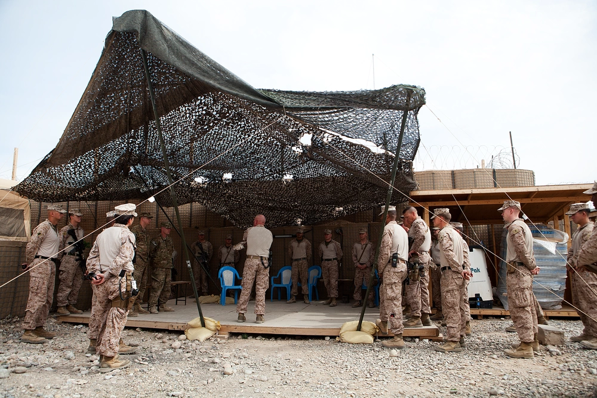
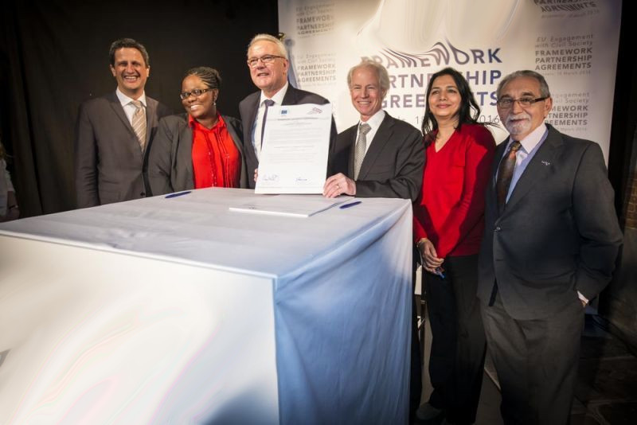

Nitedcos Manque Republic Send Troops To Southern Ridamark
Nitedcos Manque Republic Send Troops To Southern Ridamark To Help Relieve The City, Dec 18, 2017

Earlier today, the Nitedcos Manque Republic have officially announced that they are interfering with the conflic in the S.Ridamark and NE.Wtorcxie border. The Republic is sending 50,000 strength to help S.Ridamark...
Namo Mai Islands Joins BNAP
The Namo Mai Islands signs document to officially join the Borous Nations Alliance For Peace, Sep 2, 2017

On September 1, 2017, the Namo Mai Islands, signed the Borous Nations Alliance For Peace Joint Contract Agreement. The country is set to officially join the alliance including a seat in the National Congress on...